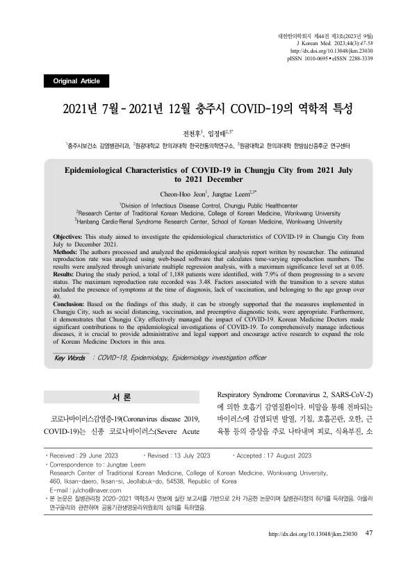

Epidemiological Characteristics of COVID-19 in Chungju City from 2021 July to 2021 December
Jeon CH, Leem J
Journal of Korean Medicine 44(3):47-58

첫 장 · 오픈액세스First page · open access
논문 소개Summary
감염병 유행의 기록은 대개 전국 단위이거나 수도권에 몰려 있습니다. 그러나 실제 방역은 지자체가 하고 인구 구성과 대응 역량은 저마다 다릅니다. 중소도시의 기록이 남지 않으면 다음 감염병에서 참고할 자료가 없습니다. 코로나19에서 한의 치료의 효과나 공중보건한의사 설문은 보고된 적이 있어도, 한의사가 역학조사관으로 무엇을 했는지는 보고된 적이 없었습니다.
이 연구는 델타 변이가 이끈 제4차 대유행 기간인 2021년 7월부터 12월까지 충주시에서 확진된 1188명을 분석했습니다. 자료는 저자 한 사람이 충주시보건소에서 한의사 역학조사관으로 일하며 질병관리청에 제출한 역학분석 보고서를 허가를 받아 2차 가공한 것이고, 공용기관생명윤리위원회 심의를 거쳤습니다. 감염재생산지수는 WHO와 하버드대학의 웹 기반 프로그램으로 계산했고, 중증 이행 요인은 단변량 다중회귀분석으로 보았습니다.
확진자 1188명 가운데 병원으로 이송된 사람이 94명(7.9%)이고 그 가운데 10명이 사망했습니다. 최대 감염재생산지수는 3.48(95% 신뢰구간 2.66-4.38)이었고, 사회적 거리두기를 4단계로 올린 8월 하순에는 0.35까지 내려갔습니다. 확진자 중 외국인이 143명(12.0%)이었는데 충주시의 등록 외국인은 시 인구의 2.1%에 그칩니다.
중증 이행과 유의하게 관련된 것은 세 가지였습니다. 확진 당시 유증상이 2.09배(1.18-3.94), 예방접종 미접종이 3.45배(2.04-5.88)였고, 연령은 20대에 견주어 40대 3.96배(1.39-14.3), 50대 7.54배(2.75-26.7), 60대 4.55배(1.44-17.6), 70대 이상 10.4배(3.22-41.2)였습니다. 성별·국적과 고혈압·당뇨·이상지질혈증·심혈관질환은 유의하지 않았습니다. 저자들은 기저질환이 본인 진술이고 대상이 재택·생활치료 확진자여서 병원 입원 환자를 본 연구들과 모집단이 다른 탓으로 보았습니다.
가장 큰 한계는 중증을 병원 이송 기록으로 정의한 것이고, 저자들도 그 신뢰도가 높지 않다고 적었습니다. 논문 안에서 12월 확진자 수가 본문 281명·표 381명으로 어긋나 옮기지 않았습니다. 총계와 맞는 쪽은 표입니다. 저자들은 2023년 3월 기준 전국 18명의 한의과 공중보건의가 역학조사관으로 일한다고 보고하고, 한의 의료기관이 코로나19 환자관리정보시스템에 들어가지 못해 한의 치료의 실적이 국가 통계에 남지 않았음을 지적합니다.
Records of epidemics are usually national in scope or concentrated on the capital region. Yet quarantine work is done by local governments, whose population structure and response capacity differ from place to place, and if no record survives of the smaller cities there is nothing to consult when the next epidemic comes. The effects of Korean medicine treatment during COVID-19 and surveys of public health doctors of Korean medicine had been reported, but what a Korean medicine doctor actually did as an epidemiological investigation officer had not.
This study analysed the 1188 people diagnosed with COVID-19 in Chungju City between July and December 2021, during the fourth wave driven by the Delta variant. The data come from the epidemiological analysis report that one of the authors submitted to the Korea Disease Control and Prevention Agency while working there as a Korean medicine epidemiological investigation officer; it was reprocessed with the agency's permission and reviewed by the Public Institutional Review Board. Reproduction numbers were estimated with the web-based programme of the WHO and Harvard University, and factors in progression to severe status were examined by univariate multiple regression.
Of the 1188 patients, 94 (7.9%) were transferred to hospital and 10 of them died. The maximum reproduction number was 3.48 (95% confidence interval 2.66-4.38), falling to 0.35 in late August after social distancing was raised to level four. One finding stood out: 143 patients (12.0%) were foreign nationals, whereas registered foreign residents made up 2.1% of the city's population.
Three factors were significantly associated with progression to severe status: being symptomatic at diagnosis (2.09-fold, 1.18-3.94), never having been vaccinated (3.45-fold, 2.04-5.88), and age, which relative to those in their twenties was 3.96-fold for the forties (1.39-14.3), 7.54-fold for the fifties (2.75-26.7), 4.55-fold for the sixties (1.44-17.6) and 10.4-fold for those aged seventy and over (3.22-41.2). Sex, nationality, hypertension, diabetes, dyslipidaemia and cardiovascular disease were not significant. The authors attribute this to comorbidities being self-reported and to a study population - people recovering at home or in residential treatment centres - that differs from the hospitalised populations examined elsewhere.
The main limitation is that severity was defined by the record of transfer to hospital, and the authors themselves note that this is not highly reliable. The December case count is not reproduced here because the paper disagrees with itself: the text says 281 and the table says 381, and it is the table that adds up to the total of 1188. The authors report that as of March 2023 eighteen public health doctors of Korean medicine were working as epidemiological investigation officers nationwide, and point out that Korean medicine institutions were not admitted to the COVID-19 patient management information system, so the record of Korean medicine treatment never entered national statistics.
인용Cite
Jeon CH, Leem J. Epidemiological Characteristics of COVID-19 in Chungju City from 2021 July to 2021 December. Journal of Korean Medicine. 2023;44(3):47-58. doi:10.13048/jkm.23030